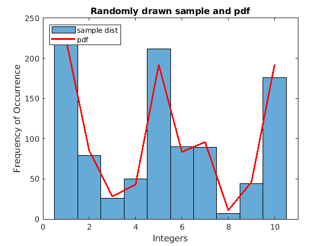

Contents
clear; close all; clc;
a)
p = rand(10, 1);
p = p/sum(p);
samp_size = 1000;
samples = randp(p, samp_size);
figure();
histogram(samples, 'DisplayName', 'sample dist');
hold on;
plot(p * samp_size, 'r-', 'LineWidth', 2, 'DisplayName', 'pdf')
xlabel('Integers')
ylabel('Frequency of Occurrence')
legend('Location', 'northwest');

samp_sizes = [10^2, 10^3, 10^4, 10^5];
figure()
for i = 1:4
samp_size = samp_sizes(i);
samples = randp(p, samp_size);
subplot(2, 2, i);
histogram(samples, 'DisplayName', 'sample dist');
hold on;
plot(p * samp_size, 'r-', 'LineWidth', 2, 'DisplayName', 'pdf')
title(sprintf('Sample size %d', samp_size));
xlabel('Integers')
ylabel('Frequency of Occurrence')
end

b)
p_size = randi([2, 20], 1);
q_size = randi([2, 30], 1);
p = rand(p_size, 1);
p = p/sum(p);
q = rand(q_size, 1);
q = q/sum(q);
r = psum(p, q);
p = [1:6]/sum(1:6);
samp_size = 1000;
samp_r = zeros(samp_size, 1);
n_rolls = 4;
for i = 1:n_rolls
if i == 1
r = p;
else
r = psum(r, p);
end
samp_r = samp_r + randp(p, samp_size);
end
figure();
histogram(samp_r, 'DisplayName', 'sample dist');
hold on;
plot(r * samp_size, 'r-', 'LineWidth', 2, 'DisplayName', 'pdf');
xlabel('Sum of rolls')
ylabel('Frequency of Occurrence')
legend('Location', 'northwest');

samp_sizes = [10^2, 10^3, 10^4, 10^5];
figure()
for i = 1:4
samp_size = samp_sizes(i);
samp_r = zeros(samp_size, 1);
for j = 1:n_rolls
samp_r = samp_r + randp(p, samp_size);
end
subplot(2, 2, i);
histogram(samp_r, 'DisplayName', 'sample dist');
hold on;
plot(r * samp_size, 'r-', 'LineWidth', 2, 'DisplayName', 'pdf')
title(sprintf('Sample size %d', samp_size));
xlabel('Integers')
ylabel('Frequency of Occurrence')
end
figure();
function samples = randp(p, num)
cdf_p = zeros(size(p));
cdf_p(1) = p(1);
for i = 2:length(p)
cdf_p(i) = p(i) + cdf_p(i-1);
end
samples = zeros(num, 1);
rand_probs = rand(num, 1);
for i = 1:num
samples(i) = find(cdf_p > rand_probs(i), 1 );
end
end
function r = psum(p, q)
p_size = length(p);
q_size = length(q);
r_size = p_size + q_size;
p(r_size) = 0;
p = circshift(p, 1);
q(r_size) = 0;
r = real(ifft(fft(p) .* fft(q)));
end